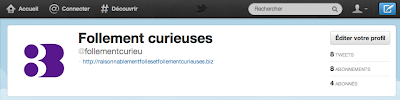
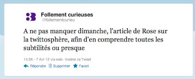
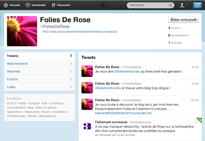

Ma passion de l'humain se manifeste de nombreuses manières : observer les gens, essayer de comprendre les comportements, analyser les transmissions transgénérationnelles, tenter de donner du sens aux événements, sonder l'âme, m'intéresser aux différents moyens d'expression, de la création à la communication, pour ne citer que les principaux. Je suis autant passionnée par l'évolution de la conscience que les réseaux sociaux. L'écart est grand, je l'assume.
On ne peut parler de communication en ce début de 21ème siècle, sans évoquer les réseaux sociaux. C'est pourquoi j'ai décidé de scribouiller un article sur Twitter, un site de micro-blogging où 140 millions de pelés gazouillaient en choeur fin 2011, dans un langage codé d'extra-terrestre. Mon objectif est de tenter d'expliquer aux terriens lambdas ce qu'est la twittosphère, en même temps que j'en apprends les subtilités.
Imaginez l'air-détaché-de-ceux-qui-sont-branchés que vous pourrez prendre lors de vos prochains repas de famille ou mieux encore, avec vos ados.
Imaginez l'air-détaché-de-ceux-qui-sont-branchés que vous pourrez prendre lors de vos prochains repas de famille ou mieux encore, avec vos ados.
{kind=link}
Vous avez forcément entendu parler de Twitter. Ne serait-ce qu'en mai 2011, avec l'affaire dite DSK, qui a propulsé Twitter sur le devant de la scène en France. C'est un tweet de 123 caractères qui a déclenché le ramdam (buzz). On verra ensuite des journalistes agglutinés devant la salle d'audience, accrochés à leur téléphone portable, relatant les tweets reçus de leurs collègues se trouvant à l'intérieur. Jamais l'information sur une affaire n'avait circulé si rapidement.
Pour en savoir plus lire l'article du 20 mai 2011 sur LeFigaro.fr "l'affaire DSK propulse Twitter en premier plan en France".
Pour en savoir plus lire l'article du 20 mai 2011 sur LeFigaro.fr "l'affaire DSK propulse Twitter en premier plan en France".
Twitter c'est quoi ?
Un réseau où défile un flux d'informations en temps réel, sous forme de messages limités à 140 caractères, classés par ordre chronologique du plus récent au plus ancien dans un fil d'actualités.
Twitter c'est qui ?
Toutes personnes qui ont un intérêt à publier une information en temps réel : les journalistes, les politiques, les hommes d'affaires, les célébrités, les musiciens, les artistes en tout genre, les écrivains, les bloggers, vous et moi.
Twitter pourquoi ?
Pour suivre des personnes qui ont des choses intéressantes à dire ou du moins des choses qui vous intéressent. Il faut donc trouver les bonnes personnes à suivre, des amis, des médias ou des structures parlant de sujets qui vous passionnent et qui pourront interagir avec vous.
Pour communiquer sur vos activités, votre travail, avec vos amis, pour promouvoir un produit, faire connaître un artiste ou un blog par exemple.
Avant d'aller plus loin
Si vous êtes débutant sur Twitter, je vous invite à commencer par lire l'article que j'ai écrit à la suite de celui-ci Twitter en 10 points un point c'est tout !, qui est un condensé et une vulgarisation de ce dossier.
Twitter / Facebook quelles différences ?
Facebook permet de rester en contact avec des amis, les vrais de vrais, ceux que l’on compte sur les doigts d’une à quelques mains et les "autres" amis, que je préfère appeler "contacts", des connaissances plus éloignées, des personnes avec qui vous partagez des intérêts communs et... quelques parasites qui cherchent à soigner leur égo. Vous choisissez qui vous accepter dans votre communauté. Sur Twitter c'est le contraire, vous choisissez qui vous voulez suivre. La réciprocité n'est pas de mise.
Il arrive que les utilisateurs de Facebook ne s’y retrouvent pas sur Twitter. Probablement parce qu'ils viennent avec l'idée d'y retrouver le même côté distrayant et interactif des échanges comme à la maison, alors que sur Twitter ont vient avant tout chercher de l'information en temps réel, comme au café du coin où vous pouvez consulter la presse et entendre les derniers potins.
Par défaut, tout ce que vous publiez sur Twitter est public. Toutefois, on n'y partage pas le même degré d'intimité que sur Facebook, ni son côté un peu voyeurisme, n'ayons pas peur de se l'avouer.
Pour en savoir plus lire l'article publié le 10 mars 2010 sur Krississ.fr "10 différences entre Facebook et Twitter pour partager avec sa communauté".
Pour en savoir plus lire l'article publié le 10 mars 2010 sur Krississ.fr "10 différences entre Facebook et Twitter pour partager avec sa communauté".
Vous l'aurez compris, si vous êtes utilisateur régulier de Facebook, vous devez commencer par oublier toute la logique des amis, du mur appelé désormais journal, des j'aimes, des événements et autres. Les deux choses identiques sont le fil d'actualités et la possibilité de partager une info. Si vous n'êtes pas utilisateur Facebook, l'apprentissage va être nettement plus simple, vous êtes vierge d'habitudes.
En commençant par créer un compte à votre nom propre, au nom d'une société, un nom d'artiste ou un pseudo, tout va dépendre de l'utilisation que vous souhaitez en faire.
Comment débuter ?
En commençant par créer un compte à votre nom propre, au nom d'une société, un nom d'artiste ou un pseudo, tout va dépendre de l'utilisation que vous souhaitez en faire.
Vous serez toutefois limité à 14 caractères, c'est pourquoi l'adresse du compte de Raisonnablement folles et follement curieuses s'écrit comme suit @follementcurieu et que la nomination du compte est limitée à Follement curieuses (voilà ce qui arrive quand on revendique l'originalité).
|  |
| https://twitter.com/#!/follementcurieu |
S'inscrire est chose facile et rapide. Toutefois si vous avez besoin d'aide, les différentes étapes sont très bien expliquées sur la page de twoutils.com
Où trouver quoi ?
L'interface est réduite à sa plus simple expression, vous trouverez tout ce dont vous avez besoin dans la barre de menu noire en haut de l'écran. De gauche à droite :
Accueil : pour tomber sur le fil de votre page d'accueil. Ce fil est relativement long et contient les Tweets de toutes personnes que vous avez décidé de suivre sur Twitter. Vous pouvez interagir en passant votre souris sur les messages du flux (les tweets) afin de répondre ou faire suivre le message à votre communauté (retweeter).
@Connecter : pour trouver les tweets qui vous mentionnent, vos tweets qui ont été retweeté, les réponses à vos tweets de vos abonnés ou les dernières personnes qui se sont abonnées à vous.
#Découvrir : pour découvrir les tendances du moment, des histoires et des vidéos.
Le rectangle recherche : pour chercher des noms complets ou des mots clés. Vous pouvez ajouter des personnes/medias/artistes/etc. grâce aux catégories, aux suggestions intelligentes ou via votre adresse email.
Le bonhomme : pour tout ce qui concerne votre compte et l'utilisation de Twitter.
Le carré bleu avec une plume : pour écrire votre premier tweet.
Quels sont les principes de base ?
Sur Twitter on suit des personnes ou des médias qui publient des informations qui nous intéressent, les abonnements. Des personnes vous suivent parce qu'elles sont intéressées par ce que vous publiez, les abonnés. Ce ne sont pas forcément les mêmes.
Un exemple pour votre tweet culture : la chanteuse mondialement connue Lady Gaga comptait 22'358'312 abonnés et 139'320 abonnements au 7 avril 2012 à 17:30. Elle détient le record absolu d'abonnés. Cela signifie que plus de 22'358'312 personnes suivent les infos qu'elle publie et que de son côté elle s'est abonnée à l'actualité de 139'320 personnes. Chiffre qui aura encore augmenté au moment où vous lirez cet article. Le ratio n'est pas le même et vous permet de constater que la réciprocité n'est pas de mise sur Twitter. Vous aurez probablement des ambitions plus modestes en terme d'abonnés, quoi que, peut-être que sommeille en vous une Lady Gaga.
Sur Twitter, vous avez un contrôle sur votre page. Vos abonnés et non abonnés voient ce que vous tweetez et retweetez. Lorsque quelqu'un vous écrit ou répond à un de vos tweets, son message apparaît sur sa page, de votre côté vous pourrez le voir dans l'espace interaction @Connecter. Si vous vous adressez à une personne, votre message n'est pas visible sur sa page mais sur la vôtre (c'est l'inverse sur Facebook).
En résumé : chacun reste chez soi et communique depuis sa page. Une exception toutefois (sinon cela serait trop simple) lors d'un retweet. Celui apparaît à la fois sur votre page et reste sur la page de l'auteur.
Un tweet est le nom que l'on donne aux messages échangés. Ils sont de 140 caractères, c'est court, mais bref. Vous l'aurez compris, on n'est pas là pour écrire des tartines, mais pour communiquer de manière synthétique et renvoyer sur des liens (photos, vidéos, sites internet). Cliquer n'importe où sur le tweet, pour ouvrir et voir les détails du message et les réponses données à l'information.
Vous constaterez très vite qu'il est difficile de réduire sa pensée à 140 caractères.
A ce sujet, lire l'excellent article de la Tribune de Genève du 8 juin 2011 "Grandeur et décadence de Twitter".
Chaque tweet commence par le nom du compte ayant posté le message précédé du signe @, cliquer dessus vous amène sur la page du profil. Tous les mots commençants par @ sont donc des mentions de comptes Twitter.
En résumé : chacun reste chez soi et communique depuis sa page. Une exception toutefois (sinon cela serait trop simple) lors d'un retweet. Celui apparaît à la fois sur votre page et reste sur la page de l'auteur.
Qu'est-ce qu'un tweet (un gazouilli) ?
|  |
| https://twitter.com/#!/follementcurieu/status/188606146033106944 |
Vous constaterez très vite qu'il est difficile de réduire sa pensée à 140 caractères.
A ce sujet, lire l'excellent article de la Tribune de Genève du 8 juin 2011 "Grandeur et décadence de Twitter".
Qu'est-ce qu'un retweet ?
Le retweet est l'essentiel de l'activité sur Twitter. Il s'agit de republier une information qui a défilé dans notre fil d'actualité, pour la partager à son tour à sa communauté. Toutes les personnes qui sont abonnées à votre compte la verront passer dans leur propre fil d'actualités.
Dans ce tweet on remarque grâce au triangle vert, que Follement Curieuse a retweeté le message d''une certaine Folies de Rose (tout rapport avec une personne existante serait que pure logique). Ce tweet apparaît sur notre page, pour montrer à nos abonnés les messages de ceux qui aiment notre actualité.
Le retweet est un mélange du bouton "j'aime" et de la fonction "partager" sur Facebook.
Le retweet est un mélange du bouton "j'aime" et de la fonction "partager" sur Facebook.
Comment lire ou écrire un tweet ?
Chaque tweet commence par le nom du compte ayant posté le message précédé du signe @, cliquer dessus vous amène sur la page du profil. Tous les mots commençants par @ sont donc des mentions de comptes Twitter.
@ at - répondre à
Le symbole @ est également utilisé pour écrire à quelqu’un ou pour nommer quelqu'un dans un tweet de manière à ce qu'il sache qu'il a été nommé.
Quand vous envoyez un tweet en utilisant le symbole @ (réponse) à une personne qui vous suit également, votre message apparaîtra sur votre page, dans sa section @Connecter et dans son fil d'actualité.
Quand vous envoyez un tweet à une personne qui ne vous suit pas, votre message apparaîtra sur votre page, dans sa section @Connecter. Par contre, comme elle ne vous suit pas, le tweet n'apparaît pas dans sa file de message. Il faut savoir qu'il y a des personnes qui ne consultent pas cette section, surtout celles avec un grand nombre d'abonnés.
|  |
| https://twitter.com/#!/FoliesDeRose |
Vous pouvez aussi communiquer l'information à quelqu'un de précis :
Dans ce message Folies de Rose a écrit à Lady Gaga pour l'inviter à découvrir un blog où l'on parle de création, d'humain et de geekeries aussi. Elle indique le lien du blog et la mention @follementcurieu pour informer Follement curieuses qu'elle a envoyé ce tweet.
Remarque : Oui, ce message a bien été envoyé pour de vrai à Lady Gaga, vous pouvez vérifier en allant sur le compte de Folies de Rose. Quand on vous dit que nous sommes raisonnablement folles ! Evidemment, Lady Gaga avec 22 millions d'abonnés, ne doit pas lire souvent sa rubrique @Connecter.
Il est à noter que Twitter raccourcit automatiquement les liens à 19 caractères, sinon nous ne pourrions jamais tweeter avec un nom de blog aussi long. Voilà ce qui arrive quand on revendique l'originalité !
# hashtag - dièze
Pour les utilisateurs Mac, le # s'obtient en appuyant sur les touches "alt" + "3"
Le hashtag est une étiquette permettant de taguer les messages. C'est une fonctionnalité puissante très simple à utiliser, puisqu'il suffit de préfixer n'importe quel mot par le caractère # pour le transformer en mot clé.
Cliquer sur un hashtag vous amène à une page de recherche en temps réel de tous les messages comportant cet identifiant, #Obama2012 = Campagne présidentielle 2012 de Barack Obama, #RTS = Radio Télévision Suisse. De nombreuses émissions de télévision ont un hashtag dédié, par exemple #ondar = On ne demande qu'à en rire, #dpda = des paroles et des actes ou encore #thevoice pour The Voice. Cela permet de commenter un événement ou une émission en direct (live-tweeter). Destiné à ceux qui veulent tester le côté tendance et surréaliste de se retrouver seul devant sa télé, tout en parlant en direct de l'émission avec des centaines, voire des milliers de gens.
Le hashtag pour mentionner Raisonnablement Folles et Follement curieuses est #RFeFC.
Les hashtags ne sont pas sensibles à la casse (majuscule/minuscule) et peuvent contenir n'importe quel caractère, même s'il est déconseillé d'utiliser les caractères accentués.
Pour en savoir plus sur le phénomène actuel entourant ce symbole typographique, lire l'article du journal Le Matin La suprématie du dièse.
Ce tweet ne s'adresse pas à une personne en particulier (pas de symbole @), il mentionne l'artiste Arno Santamaria #ArnoSantamaria et le titre de son clip Chez Moi #ChezMoi afin de permettre le référencement par Twitter. Cliquer sur chacun des termes permet de trouver tous les tweets correspondants aux mots clés. Par contre, ils ne parleront pas forcément du clip, car #chezmoi peut être utilisé dans de nombreuses situations.
Cet exemple montre un tweet qui a été ouvert (en cliquant n'importe où sur le message), afin d'en afficher les détails, notamment le lien sur la vidéo.
Twitter permet de faire de belles découvertes, si vous aimez la chanson engagée, des textes avec l'inspiration de Léo Ferré au loin, je vous invite à découvrir en chemin cet auteur-compositeur-interprète et pourquoi pas à le suivre @ArnoSanta.
Apprendre à parler Twitter : Comme vous avez pu le constater, Twitter utilise un langage qui lui est propre. Je vous recommande de lire l'article "Vocabulaire Twitter : 15 mots et symboles à connaître" de Twoutils.com et ensuite de vous référer au glossaire de Twitter.
Pour en savoir plus sur le phénomène actuel entourant ce symbole typographique, lire l'article du journal Le Matin La suprématie du dièse.
Ce tweet ne s'adresse pas à une personne en particulier (pas de symbole @), il mentionne l'artiste Arno Santamaria #ArnoSantamaria et le titre de son clip Chez Moi #ChezMoi afin de permettre le référencement par Twitter. Cliquer sur chacun des termes permet de trouver tous les tweets correspondants aux mots clés. Par contre, ils ne parleront pas forcément du clip, car #chezmoi peut être utilisé dans de nombreuses situations.
Cet exemple montre un tweet qui a été ouvert (en cliquant n'importe où sur le message), afin d'en afficher les détails, notamment le lien sur la vidéo.
Twitter permet de faire de belles découvertes, si vous aimez la chanson engagée, des textes avec l'inspiration de Léo Ferré au loin, je vous invite à découvrir en chemin cet auteur-compositeur-interprète et pourquoi pas à le suivre @ArnoSanta.
Vous souhaitez aller plus loin ?
Envoyer un message privé : DM est une option qui vous permet d’envoyer un message directement à un autre membre, sans que celui-ci soit visible de tous. Il arrive que des membres indiquent dans un Tweet : "me répondre par DM" pour signaler que la suite de la conversation sera privée.
Avoir de l'intimité : Oui c'est possible, vous pouvez passer votre compte en privé. A partir de ce moment là, vos tweets deviennent accessibles uniquement à vos abonnés, que vous aurez dû préalablement accepter. Utile pour rester en famille ou pour créer un réseau privé au sein d'un groupe ou d'une entreprise.
Créer des listes : Plus vous suivrez de personnes, plus vous aurez d'informations, peut-être au détriment de l'actualité de vos amis ou d'abonnements que vous estimez prioritaires. Les listes permettent de suivre des personnes sans être abonnées, que vous classez par thème, par exemple: Média - Musique - Psycho - Infos - etc.
Pour la marche à suivre, lire l'article "Comment créer une liste sur Twitter" de Twoutils.comAvoir de l'intimité : Oui c'est possible, vous pouvez passer votre compte en privé. A partir de ce moment là, vos tweets deviennent accessibles uniquement à vos abonnés, que vous aurez dû préalablement accepter. Utile pour rester en famille ou pour créer un réseau privé au sein d'un groupe ou d'une entreprise.
Pour en savoir plus lire l'article "Comment garder ses tweets privés ?" de Twoutils.com
Vous êtes toujours là ?
Si vous n'avez pas décroché en route, c'est que vous êtes prêts à découvrir la Twittosphère.
Le premier abonnement à suivre est Twoutils @twoutils une ressource indispensable pour toutes les questions que vous vous poserez et le deuxième... pourquoi pas Follement curieuses @follementcurieu?
A tout à de suite sur Twitter.
Signé :
Zozio
Remerciements à Laetitia pour m'avoir permis de dépasser le mode tweeter/retweeter et comprendre certaines subtilités de Twitter. Merci aussi pour sa relecture pointue et ses suggestions d'amélioration de cet article :)
Le premier abonnement à suivre est Twoutils @twoutils une ressource indispensable pour toutes les questions que vous vous poserez et le deuxième... pourquoi pas Follement curieuses @follementcurieu?
A tout à de suite sur Twitter.
Signé :
Zozio
Remerciements à Laetitia pour m'avoir permis de dépasser le mode tweeter/retweeter et comprendre certaines subtilités de Twitter. Merci aussi pour sa relecture pointue et ses suggestions d'amélioration de cet article :)
Ouh la la ! Je crois bien qu'il va me falloir plusieurs lectures de cet article. En tout cas, c'est top pour les débutants comme moi, merci !
RépondreSupprimerPeut-être que maintenant, je vais réussir à y comprendre quelque chose... merci pour le mode d'emploi! :)
RépondreSupprimerAh oui ! moi aussi il va falloir que je m'y replonge plus d'une fois. Merci beaucoup pour tous ces renseignements sur la twittosphère !
RépondreSupprimerAvec ce mode d'emploi, plus d'excuse pour ne pas vous suivre dans vos folies ;))
RépondreSupprimerL'anonyme-qui-n'a-pas-le-temps-de-mettre-son-profil..
PS : sacré boulot et merci d'en faire profiter les autres !
RépondreSupprimer